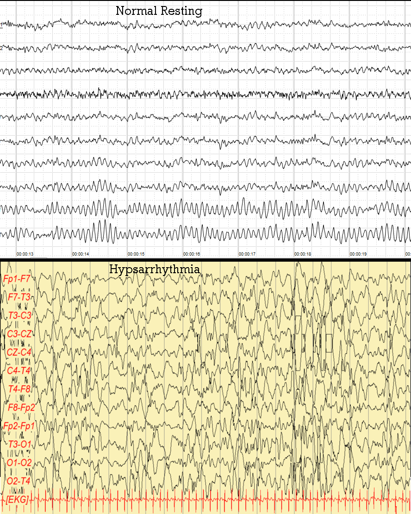

Dado impactante · Pág. 14 de 20
West e Lennox-Gastaut: espasmo, hipsarritmia e o 20%
Tríade: espasmos + hipsarritmia + retardo. Remissão “de novo” ~20% — pequena. A síndrome de West adora cair em prova justamente porque o número engana: 20% não é cura.
As síndromes epilépticas se organizam por idade. A primeira que aparece é a do lactente — espasmos em flexão, EEG caótico e prognóstico reservado. E ela pode evoluir para a pior das encefalopatias epilépticas da infância.
West: tríade
As síndromes são organizadas por idade. A síndrome de West é dos lactentes (<1 ano); adora cair em prova. Tríade: espasmos + hipsarritmia + retardo do DNPM.
Espasmo ≠ mioclonia
O espasmo não é clônico/mioclônico: é contração súbita com travadinha final (vai-trava-solta), sobretudo proximal de MMSS/MMII. As mães descrevem “susto” ou “soluço”; podem ser centenas de espasmos/dia. O EEG é caótico: hipsarritmia.
Prognóstico e 20%
O prognóstico não é bom em geral. O West pode ser “de novo” ou secundário a agressão (malformação, infecção); o idiopático tem chance de remissão (~20%, pequena).
Caixa-nuance · [155] VFP [155]: o 20% é coerente com a faixa de remissão de espasmos (~10–25% em revisões), não número único de diretriz. Remissão de espasmos ≠ desenvolvimento normal. Mantém o tom: pequena chance, prognóstico no geral ruim — não inflar 20% como “cura”.
West → LGS
Persistência/evolução: o West pode trocar para o Lennox-Gastaut. O LGS tem múltiplas crises (tônicas, ausências atípicas, TCG…), controle dificílimo e grande retardo de DNPM.
ACTH e vigabatrina
O tratamento de escolha do West é o ACTH (hormônio hipofisário → cortisol); a alternativa é a prednisolona. O AED citado é a vigabatrina — sobretudo no West refratário/grave.
Regra · vigabatrina e o custo visual
A vigabatrina tem risco de perda visual importante e irreversível → o custo-benefício é restrito. Não é droga de primeira janela para qualquer epilepsia — é do West refratário/grave, com o olho no campo visual.

Resumo operacional
West = lactente + tríade; ACTH/prednisolona; vigabatrina com custo visual; pode virar LGS.
Por que importa
Confundir espasmo com mioclonia atrasa o diagnóstico; inflar o 20% cria falsa esperança de cura cognitiva.
Quiz
Conexão
Na criança maior, a ausência infantil é outro pacote — e é nela que o caso do João fecha.